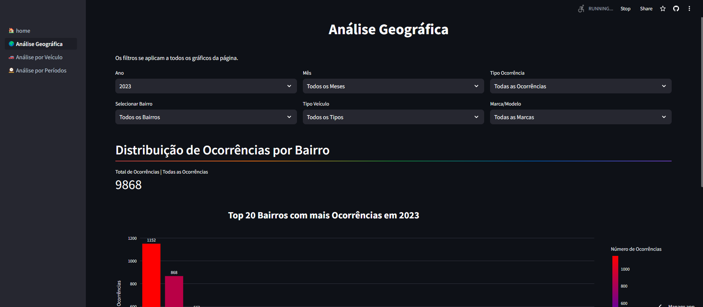

Análise de Dados Públicos de Furtos e Roubos no municipio de Guarulhos-SP
Este projeto faz parte de uma atividade extensiva dedicada à análise e disseminação de dados públicos sobre furtos e roubos em Guarulhos-SP. A iniciativa visa não apenas compreender as tendências de crimes na região, mas também proporcionar insights valiosos para a comunidade. Através da aplicação de técnicas avançadas de ciência de dados.